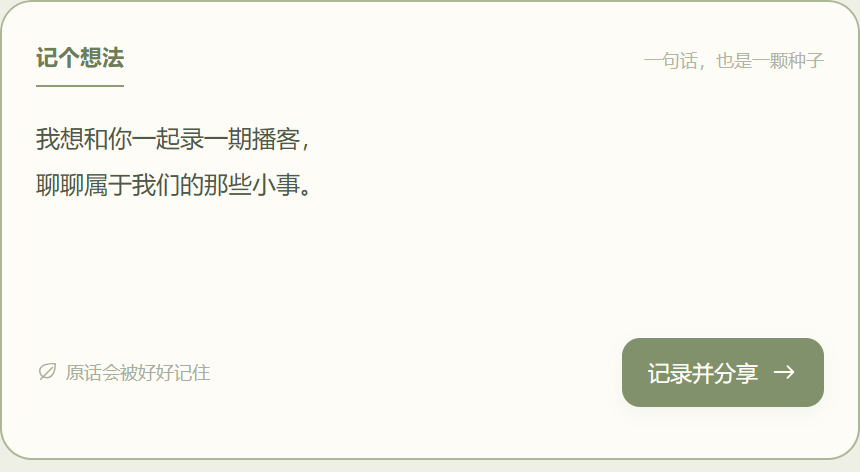
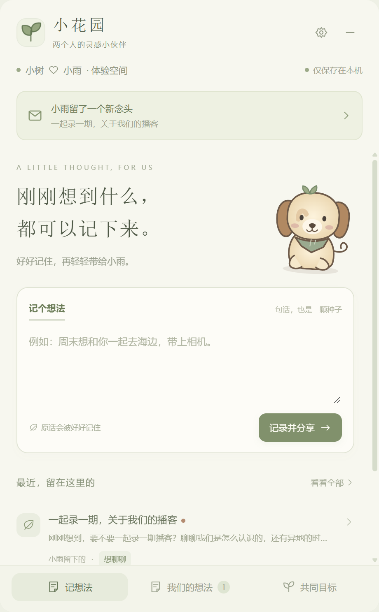
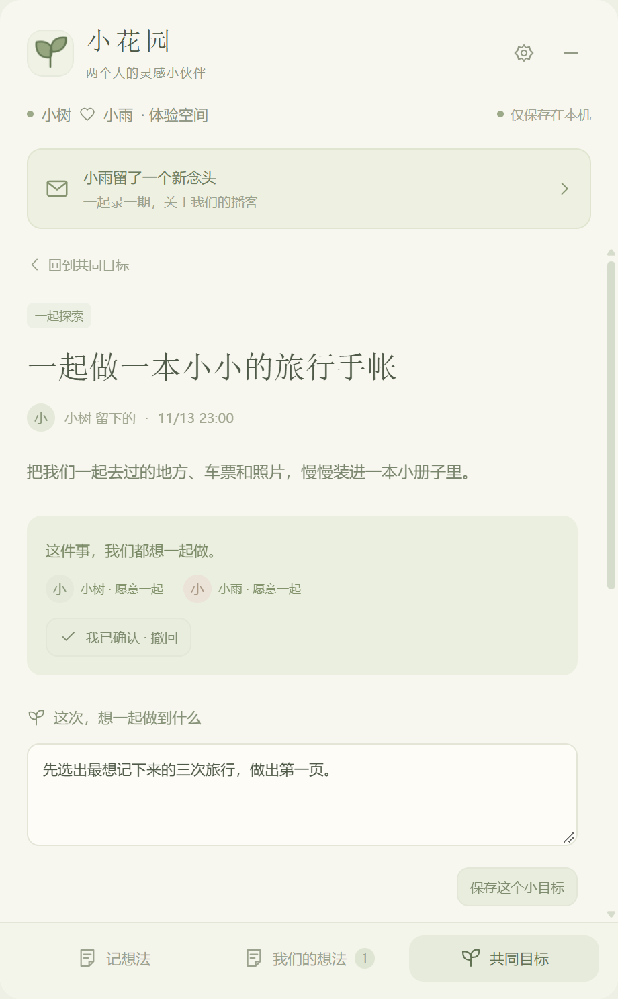

WINDOWS
安装版或便携版，选一种就好
- 安装版：文件名以
-win-x64-setup.exe结尾。双击后，按安装向导完成安装。 - 便携版：文件名以
-win-x64-portable.exe结尾。把它放在方便找到的固定文件夹，双击即可运行。 - 当前 Windows 软件包为 x64 版。以后打开软件时，使用自己安装的程序或保留的便携版文件。
从打开软件、找到彼此，到留下第一个念头。两个人各自用自己的账号，让想一起做的事有一个安稳的地方。
运行桌宠，鼠标所在屏幕的右下角出现小狗。双击它，进入主界面。
两个人分别创建账号，设置自己的昵称和密码。
一人生成邀请码，另一人填写后加入同一个小花园。
单击宠物，写一句话，再点“记录并分享”。
先想看看界面？“体验空间”提供本机示例。两台电脑日常共享时，需要各自登录正式账号并完成配对。
在发布页选择适合自己电脑的文件。安装和运行桌宠不需要准备开发工具。
-win-x64-setup.exe 结尾。双击后，按安装向导完成安装。-win-x64-portable.exe 结尾。把它放在方便找到的固定文件夹，双击即可运行。-mac-arm64.dmg；显示 Intel，选择 -mac-x64.dmg。从旧版换到新版：先在旧版桌宠的右键或托盘菜单中选择“退出小花园桌宠”，再打开新版本。安装包请从本项目的 发布页 获取。
启动后，宠物会出现在鼠标所在屏幕的右下方。它出现后就可以操作；还没有注册账号，也可以先打开登录入口。
看不到宠物时：再次打开桌宠程序，找回已经运行的小伙伴；也可以右键托盘中的绿色小花园图标 ，选择“找回小伙伴”。Windows 托盘在时钟附近，图标可能收在向上的小箭头 ^ 里；Mac 的图标位于顶部菜单栏。
| 你想做什么 | 怎样操作 |
|---|---|
| 随手留一句想法 | 单击宠物，打开快捷记录卡片。 |
| 看记录、目标或设置 | 双击宠物，或右键选择“打开主界面”。 |
| 挪动宠物的位置 | 按住宠物拖动，到喜欢的位置后松开。 |
| 暂时收起主界面 | 点主界面右上方的收起按钮；宠物和收件会继续运行。 |
| 完全退出软件 | 在宠物的右键或托盘菜单中点“退出小花园桌宠”。 |
键盘也能记：Windows 按 Ctrl + Shift + Space；Mac 按 ⌘ + Shift + Space，打开快捷记录卡片。
怎样确认已经配对：设置里出现两个人的名字，并显示“我们已经连接好了”。两台电脑可以分别使用 Windows 和 Mac，但都要连接同一个小花园地址。
“周末想和你一起去海边，带上相机，慢慢走一走。”

草稿会留着：点卡片外面可收起快捷卡片。快捷卡片与主界面各自保留草稿，下次从同一个入口打开继续写。
共同话题：这个月一起读完一本书。
小目标：每周分享一个喜欢的片段。
下一步：各自推荐一本书，再一起选。
普通想法也可以慢慢变成目标。打开“我们的想法”中的一条记录，双方分别确认愿意一起做，再填写目标和分工。


截图中的人物、名字与记录均为本机体验示例。
打开设置，选择“小狗 · 暖暖”或“小猫 · 绵绵”。想换成自己的图片，点“换成自己的形象”。
曾登录过这台电脑的账号，可以在离线时继续记录。原话先留在本机，联网后会尝试补发。
看到“等待发送”或“留在本机”时，点旁边的“查看”，可重新发送，或移回原来的输入框继续编辑。
还没有登录过的电脑，需要先联网注册或登录。待发送内容尚未到达共享空间，请先保留这台电脑上的资料。
已经发送成功的记录会保存在共享空间。对方关机、休眠或完全退出桌宠时不会实时弹窗，恢复运行、联网登录后可以再查看。
若只是收起主界面，宠物和后台收件仍会继续运行。宠物上的信封表示有未读消息；双击进入主界面，打开对应记录，就能接住对方留下的念头。
如果界面提示还有待发送的想法，先完成发送或将它们移回草稿，再解除绑定。
更新提醒本身不会自动下载。下载或校验失败时不会继续安装，可以稍后重新检查，也可到 发布页 手动获取新版。
再次打开桌宠程序，或从托盘菜单选择“找回小伙伴”。找托盘图标时，Windows 可先点时钟附近的向上小箭头。若仍看不到，在托盘里选择“退出小花园桌宠”，再打开刚下载的新版本。
这台电脑还没有登录正式账号。点“登录或注册”进入主界面，或双击宠物打开主界面。完成登录后，单击宠物就能打开快捷记录卡片。
先看看界面是否标着“体验空间”或“仅保存在本机”。体验空间的示例在当前电脑演示；日常共享时，两个人需要分别连接同一个服务器、登录自己的账号，并通过邀请码配对。
在两台电脑的设置中核对小花园地址，再看配对区域是否显示“我们已经连接好了”和两个人的名字。如果仍是“邀请伴侣，一起入住”，需要继续生成或填写邀请码完成配对。
让生成邀请码的一方在设置中重新生成，再把新码交给伴侣。邀请码只能使用一次，有效期为 24 小时；重新生成后，先前的码会失效。
查看桌宠设置中“桌面通知”是否开启、“免打扰”是否关闭；再检查电脑系统是否允许小花园发送通知。即使没有弹窗，也可以在软件里查看信封和未读记录。
如果测试账号已经清理，需要重新注册，再用新的邀请码配对。新的软件安装包本身不会帮你恢复已清理的服务器账号或记录。